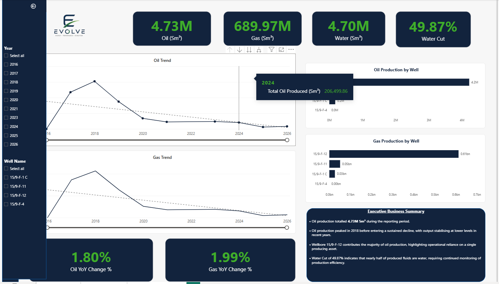
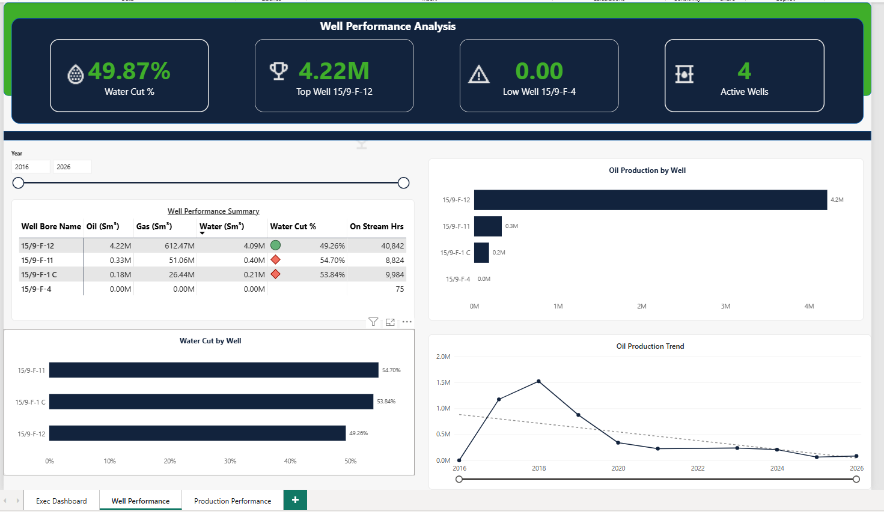
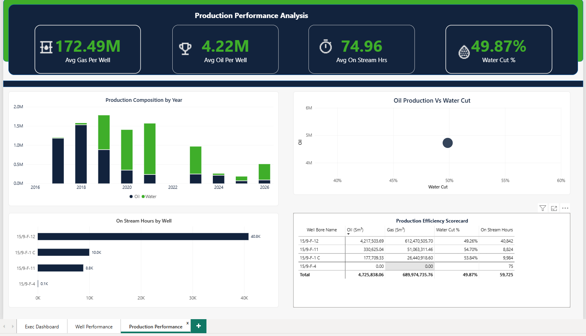

Production Records
Operational records provide the starting point for analysing oil, gas, water and well-level production activity.
An end-to-end Power BI reporting solution designed to transform production records into structured operational intelligence across production performance, well contribution, water exposure and operating activity.
Oil and gas production data can contain detailed information on volumes, well activity and operating conditions, but raw records alone do not provide a clear management view of production health or the factors driving it.
Operational records provide the starting point for analysing oil, gas, water and well-level production activity.
Production is placed in the context of time, individual wells, water cut and on-stream activity to support meaningful comparison.
Structured Power BI reporting provides a route from headline field performance into well-level and production-efficiency investigation.
The solution was designed around operational questions rather than visual variety: each report page has a defined role in moving the user from overall production position to the underlying well and efficiency drivers.
The reporting environment was structured around the questions a production-focused user would need to answer when assessing field and well performance.
What volumes of oil, gas and water have been produced across the selected reporting period?
How has production changed over time, and where are sustained movements or declines visible?
Which wells contribute most strongly to overall oil and gas production?
How significant is water production relative to hydrocarbon output, and how does water cut vary by well?
How much on-stream activity is being recorded, and how does operating time differ between producing wells?
How do production composition, average output and operating activity combine to describe overall performance?
The solution uses public Volve production data prepared in Power Query and structured in Power BI to support consistent analysis across production measures, wellbores and reporting periods.
Production fields were reviewed for analytical relevance, structure, completeness and appropriate data types.
Power Query was used to clean, standardise and prepare the production records for analysis.
Well and calendar context were introduced to support consistent filtering, comparison and time analysis.
Reusable DAX measures provide consistent logic for production totals, shares, water cut and operating measures.
The analytical model separates production activity from the contextual fields used to analyse it, allowing the same measures to respond consistently to well and reporting-period selections.
The solution was developed through a structured workflow that moved from business questions and data preparation into validated analytical reporting.
Identify the operational questions.
Clean and structure production data.
Establish analytical relationships.
Develop reusable production KPIs.
Build purpose-led report pages.
Reconcile outputs and interactions.
Production records were reviewed, cleaned and standardised before analytical measures were introduced.
DAX measures were developed for production volume, contribution, water cut, YoY change and on-stream activity.
Three reporting views were used to separate executive monitoring, well analysis and performance efficiency investigation.
KPI logic, well contribution, filtering and visual hierarchy were reviewed before the reporting solution was finalised.
The final Power BI solution separates high-level production monitoring from detailed well investigation and broader production-efficiency analysis.
The Executive Overview brings the main production measures together in one management view, providing immediate visibility of production volumes, trend direction, well contribution and water exposure.

The executive view was analysed across cumulative production, production trend, well contribution, water exposure and operating activity rather than treating total oil and gas output as standalone performance indicators.
4.73M Sm³
The field generated substantial cumulative oil output, supported by approximately 689.97M Sm³ of gas production. These totals establish the overall production scale, but cumulative output alone does not describe the current production condition of the asset.
The production trend indicates that oil output reached its strongest level around 2018 before declining over subsequent reporting periods. This is more significant operationally than the cumulative production total because it indicates a mature production profile rather than continuing production growth.
49.87%
Overall water cut is approximately 49.87%, meaning that produced fluids contain a material water component. This changes the interpretation of gross production because increasing water exposure can reduce the quality of hydrocarbon production and increase fluid-handling requirements.
Well 15/9-F-12 contributes the overwhelming majority of field oil production. This creates a concentration risk: field-level performance is disproportionately dependent on the continued operating performance of a single well.
The executive position is therefore mixed. The field has delivered significant cumulative hydrocarbon production, but production has moved beyond its peak, water exposure is material and current output is highly concentrated in one well. Management attention should therefore focus less on cumulative production and more on production sustainability, well dependence and the increasing fluid-management burden.
Oil, gas and water production are surfaced as prominent KPIs to establish the overall production position.
Oil and gas trends provide temporal context and help identify changes in production performance.
Production-by-well visuals show how strongly individual wellbores contribute to total output.
The Executive Business Summary converts reporting outputs into concise observations for management review.
The Well Performance page supports operational investigation by comparing well output, water cut, on-stream activity and relative production contribution.

Top and low well indicators provide a quick view of relative production performance.
The performance table brings oil, gas, water, water cut and on-stream activity together for each well.
Water cut by well helps identify differences in produced-fluid composition across the field.
Well-level production charts reveal differences in contribution and support targeted investigation.
Well performance was assessed across oil, gas, water, water cut and on-stream activity so that production ranking could be interpreted alongside operating quality.
Its contribution is substantially higher than every other well in the portfolio, making 15/9-F-12 the principal production asset and the main determinant of field-level output.
Well 15/9-F-11 produces approximately 0.33M Sm³ of oil, while 15/9-F-1 C contributes around 0.18M Sm³. The gap to the dominant producer is therefore substantial.
Water cut reaches approximately 54.70% for 15/9-F-11 and 53.84% for 15/9-F-1 C, both above the 49.26% recorded for 15/9-F-12.
Oil, gas and water production are effectively zero, with only limited on-stream activity. It therefore should not be interpreted in the same way as the producing wells.
The well portfolio is highly concentrated rather than balanced. Well 15/9-F-12 carries most of the production burden, while the secondary wells contribute materially less and exhibit higher water cut. This makes field resilience increasingly dependent on the performance and availability of the dominant producer.
The Production Performance Analysis page adds a broader efficiency perspective by combining average production measures, production composition, water cut and on-stream activity.

Average oil, gas and operating measures provide another perspective on production performance beyond totals.
Production composition by year shows how the mix of oil and water changes across the reporting period.
Oil production is considered alongside water cut to provide additional operating context.
The scorecard consolidates key well-level production and operating measures into a comparable view.
Production performance was assessed over time to distinguish cumulative field output from the direction and sustainability of current production.
Production reached its strongest level earlier in the reporting period before entering a lower-output phase. This indicates that cumulative production totals should not be interpreted as evidence of current production strength.
The later production periods remain materially below the historical peak. Monitoring the direction and rate of decline is therefore more valuable operationally than viewing total production alone.
Well 15/9-F-12 records approximately 40,842 on-stream hours, materially higher than the other producing wells. High operating activity combined with dominant production confirms its central role in sustaining field output.
A field producing meaningful hydrocarbon volumes can still face deteriorating production quality if an increasing share of produced fluids is water. The approximately 49.87% field water cut therefore needs to be monitored alongside oil and gas volumes.
The production-performance view shows a field whose key management challenge is no longer simply maximising gross output. The more relevant questions are the pace of decline, dependence on the dominant well, the relationship between on-stream activity and production and whether water exposure is increasing the operating burden as hydrocarbon output declines.
The value of the solution is not simply in displaying production totals, but in connecting headline performance with the wells and operating measures driving the result.
The oil production trend shows stronger output in the earlier reporting years followed by a sustained decline, making trend deterioration visible at management level.
Well 15/9-F-12 accounts for the dominant share of production, indicating significant reliance on a single producing asset.
Overall water cut is approximately half of produced fluid volume, making water behaviour an important part of production interpretation.
Production, water cut and on-stream activity vary materially between wells, reinforcing the need to move beyond field totals into well-level analysis.
Together, the three reporting pages create a clear analytical path from overall production position to well-level exceptions and operating-performance drivers, enabling faster identification of where deeper production review may be required.
The combined reporting views show a mature producing field with significant cumulative output but a current operating profile characterised by production decline, high well concentration and material water exposure.
Well 15/9-F-12 contributes approximately 4.22M Sm³ of oil and materially more gas than every other producing well.
Recommended action: Maintain enhanced monitoring of production trend, on-stream hours, downtime and fluid behaviour for the dominant well because deterioration in this asset would have a disproportionate field-level impact.
Wells 15/9-F-11 and 15/9-F-1 C show water cut above 53%, while the overall field water cut is approximately 49.87%.
Recommended action: Monitor water-cut progression at well level and prioritise investigation where increasing water production is reducing hydrocarbon-production quality or increasing handling requirements.
Well 15/9-F-4 records effectively zero oil, gas and water production despite remaining within the active-well population.
Recommended action: Review its current operating status, historical production condition and future field role rather than including it within active-well counts without production context.
Oil output peaked earlier in the reporting period and subsequently moved into sustained decline.
Recommended action: Track production decline by period and well, alongside on-stream activity and water cut, so management can distinguish lower output caused by field maturity from deterioration associated with individual wells or operating conditions.
The final reporting solution therefore goes beyond displaying oil, gas and water volumes. It connects field performance with well contribution, production decline, water exposure and operating activity, providing a structured route from production result to operational exception and management priority.
Production reporting required a consistent time structure before trend and period calculations could be interpreted reliably.
A dedicated calendar structure was introduced to support consistent time-based reporting and reliable period analysis.
Measures such as water cut and production share required controlled numerator and denominator logic to remain meaningful across different filter contexts.
Reusable DAX measures were developed with consistent filter-context logic and safe division handling.
Well-level analysis required distinct and consistent well identifiers to avoid distorted production contribution counts.
Well identifiers were reviewed and the analysis was structured around distinct producing wellbores.
Combining executive monitoring, detailed well analysis and efficiency measures on one page reduced analytical clarity.
The final reporting architecture separates these needs across three purpose-led analytical views.
Multi-page interactive reporting and production-performance visualisation.
Data cleaning, preparation and transformation.
Production KPIs, percentages, YoY measures and reusable calculations.
Well, production and calendar relationships supporting consistent analysis.
KPI reconciliation, filtering checks and analytical consistency testing.
Production monitoring, well comparison, operational analysis and exception visibility.
This project demonstrates an end-to-end production-analytics workflow: transforming operational production data into a structured Power BI reporting environment that supports executive monitoring, well-level investigation and performance analysis.